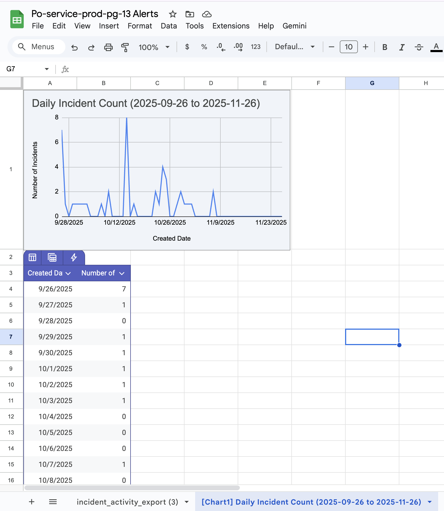
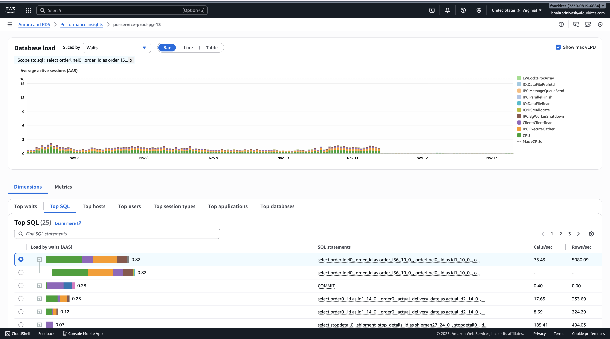
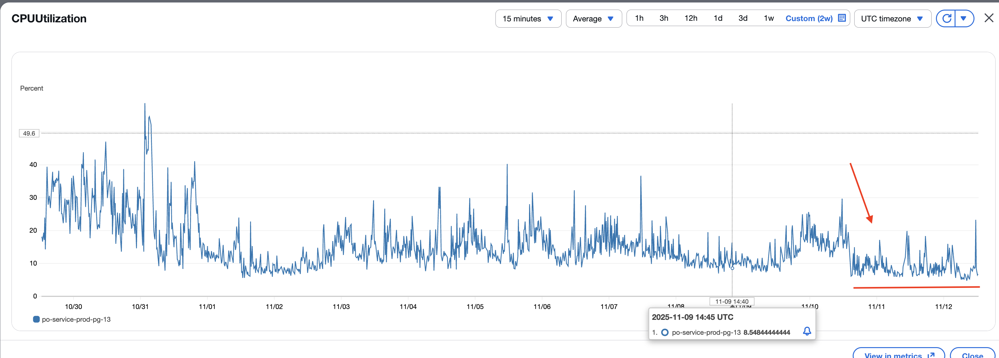

Promotion Review 2025–2026
JOURNEY OF IMPACT
Shreya Dhanta
Software Engineer → Software Engineer II
FEATURE CONTRIBUTIONS
- Dynamic Order Status - $2.1M
- Pipedream Notifications - $252K
- Read Adapter CQRS - 30s→4s
- Callbacks System - $55K SCJ
- Multi-Shipment ETA Logic
- Line Level Risks Tracking
ENGINEERING EXCELLENCE
- 20+ Production Defects Fixed
- 99% Message Volume Reduction
- @PostLoad Lazy Loading Fix
- PostgreSQL 13→16 Upgrade
- API Enhancements & DevPortal
- Security Remediation
AI & INNOVATION
- AI Code Guardian Tool Built
- 60% Faster Code Reviews
- Hackathon: 19%→78% Coverage
- Thoughtspot in 1 Week
- AI-Assisted Development
- Team AI Adoption Leader
LEADERSHIP & VALUES
- Customer Obsessed - $2.4M+
- Extreme Ownership - 20+ Fixes
- Bias for Action - Fast Delivery
- One Team - Cross-Team Collab
- Attitude Matters - 100% On-Time
- Innovation - AI Pioneer
Scroll to explore
🔄 1.1 Dynamic Order Status
End-to-end customizable order status system across frontend and backend (FE & BE)
🏆 $2.1M Unblocked
Technical Implementation
- Dynamic status system – Replaced static order status with customizable status values across Order Listing, Dashboard, Insights Dashboard, and Workspace modules
- Company-specific customization – Enabled company-specific order statuses and workflows by adding Elasticsearch support for internal status tracking and updating filter logic across all modules
- Hardcoded to dynamic migration – Migrated hardcoded status values to dynamic tables in Order Insights Dashboard with provision for automated data sync via Airflow
- Platform consistency – Achieved consistency across all dashboards and eliminated one-size-fits-all limitation, allowing businesses to adapt the platform to their unique workflows
- Extended Elasticsearch indexing – Built aggregation queries for order visibility dashboards enabling real-time filtering and search across company-specific dynamic statuses
Business Impact & Value
- Unblocked high-potential prospects – Dollarcity ($29K opportunity value) and 3M ($2.1M opportunity value across all products) who were unable to begin platform implementation until custom status configuration was delivered
- Prevented contract cancellation – Feature enabled onboarding to proceed, preventing potential contract cancellation due to feature gap
- Onboarding acceleration – Removed status configuration blocker enabling customers to complete platform setup without waiting for custom development, reducing implementation timelines
- Feature parity achieved – Resolved capability gap that was delaying deals in pipeline, bringing platform in line with enterprise customer expectations for workflow customization
💎 $2.1M+ pipeline unblocked

🔔 1.2 Pipedream Notifications
Real-time short-shipped notification system with event-driven architecture
💎 $252K Lactalis
Technical Implementation
- Real-time customer alerts – Enabled instant notifications when shipment quantities don't match ordered quantities, eliminating manual monitoring
- Event-driven architecture – Built using Kafka messaging + JPA entity listeners for reliable, asynchronous event processing
- Short shipped detection logic – Notifications triggered when shippedQty < orderedQty (invoked) and auto-resolved when fully shipped (revoked)
- Webhook integration – Seamless Pipedream integration with Bearer token authentication for secure, real-time delivery to customer systems
- Duplicate prevention – Implemented 24-hour Caffeine cache to prevent redundant notifications
- Replication lag handling – Added consistency checks to ensure accurate notifications in distributed database setup
Business Impact & Value
- Primary production feature for Lactalis ($252K deal) – Short-shipped notifications address their critical pain point of manual shipment tracking, representing the core capability they actively use post-onboarding
- Competitive differentiation – Positioned the platform ahead of competitors by offering proactive shipment visibility that enterprise customers require
- Blueprint for future enterprise deals – Success demonstrates replicable sales strategy for landing similar high-value customers with supply chain visibility needs
💎 $252K Lactalis deal enabled

⚡ 1.3 Read Adapter Implementation
CQRS architecture for enterprise-grade performance
⚡ 30s → 4s
Technical Implementation
- CQRS architecture – Implemented read/write separation by routing read operations to PostgreSQL replicas while preserving primary database for writes, reducing lock contention
- Kafka-based async processing – Built event-driven consumption from ois-fields-actions topic, decoupling read operations from the synchronous write path
- Intelligent retry with auto-fallback – Implemented custom DataSourceRetryWrapper with exponential backoff and automatic routing to primary database when replica conflicts occur
- Replication lag handling – Added consistency checks to detect stale replica data and ensure accurate query results in distributed database setup
- Duplicate prevention – Integrated 24-hour Caffeine cache (10K entries) to prevent reprocessing of duplicate Kafka messages
Business Impact & Value
- Performance improvement – Reduced API response times from 30s to 4-6s, eliminating timeout errors and improving user experience
- Scalability architecture – Read/write separation with 4:1 connection ratio (40 read vs 10 write connections), enabling horizontal scaling to support 200+ concurrent users
- High availability – Auto-fallback mechanism with 3 retry attempts (500ms to 4,000ms backoff) ensures uninterrupted service during replica failures
- Enterprise-ready – Platform supports up to 4,000 line items per order and 500 concurrent users under spike conditions
- Architecture became reference implementation – CQRS pattern adopted for future read/write separation needs across the platform

📡 1.4 Order & Delivery Callbacks
Event-driven callbacks for real-time ERP/WMS integration
💎 $55K SCJ
Technical Implementation
- Event-driven processing – Kafka consumer listens to ois-fields-actions topic and routes messages to appropriate callback service based on message type (ORDER_CREATED, ORDER_UPDATED, DELIVERY_ETA_CHANGED)
- Callback payload construction – Builds comprehensive OrderCallbacksDTO with order details, line items, delivery locations, current/previous ETA values, and shipment attributes
- Protobuf serialization – Converts callback payload to NotificationsWorkerCallbackMessage protobuf format and sends to company-specific Kafka topic for external consumption
- Retry with consistency checks – Validates updated_at timestamp (±100ms tolerance) against read replica, triggers exponential backoff retry (500ms → 4s, max 3 attempts) when replication lag detected
- Feature flag gating – Checks shouldSendCallbackMessage(companyId) before sending, enabling per-company callback control without deployment
Business Impact & Value
- Major customer enablement – SCJ ($55K deal) along with other products is also a callback customer where this feature is one of the critical capabilities they're paying for, validating direct revenue impact
- Real-time visibility – Customers receive instant notifications on order creation, updates, and ETA changes, eliminating manual tracking and refresh cycles
- System integration enablement – Protobuf-based callbacks allow customers to integrate directly into their ERP, WMS, or internal systems for automated workflows
- Reduced support queries – Proactive ETA change notifications decrease inbound questions like "where is my order?"
- Reliable delivery guarantee – 3-attempt retry with exponential backoff ensures callbacks reach external systems even during transient network or database issues
💎 $55K SCJ deal enabled


🚚 1.5 Multi-Shipment ETA & Status
Sophisticated status aggregation across multi-leg and parallel shipments
⚙️ Complex Feature
Technical Implementation
- Multi-leg shipment detection system – Implemented logic to identify multi-leg scenarios using masterReferenceNumber and masterSequenceNumber fields, with conditional status derivation where destination leg delivered status takes precedence, falling back to first leg shipped status when destination is not yet delivered
- Intelligent status aggregation for parallel shipments – Built minimum-priority-based status selection algorithm that processes all parallel shipments serving a single delivery and selects the most conservative status to ensure accurate representation when multiple shipments have different statuses
- ERP status fallback mechanism – Added delivery_latest_erp_status and delivery_latest_erp_timestamp columns enabling comparison between shipment-derived status and ERP-provided status with automatic selection of higher priority status
- Optimized DTO projection with async Kafka pipeline – Replaced entity-loading with ShipmentDeliveryInfo DTO fetching only 19 required fields in single query, combined with DELIVERY_COMPUTATION_MESSAGE for decoupled batch processing via dedicated Kafka consumer
Business Impact & Value
- One of the most important and complex features – Addresses the intricate challenge of accurately calculating delivery status and ETA when a single delivery is served by multiple shipments or when shipments traverse multiple legs through transhipment hubs
- Enabled accurate delivery tracking for complex logistics networks – Where single purchase orders are fulfilled through multi-leg shipments passing through distribution centers or regional hubs
- Resolved status inconsistency issues – Previously showed incorrect "delivered" status when only intermediate legs completed
- Fixed parallel shipment status conflicts – For customers using split shipments or multiple carriers for single deliveries, ensuring delivery status reflects actual fulfillment state
- Improved ETA accuracy – By aggregating ETAs across all shipments and selecting latest arrival time, enabling customers to set accurate expectations
⚠️ 1.6 Line Level Risks
Line-item granularity risk tracking for SCJ ($55K)
💎 $55K SCJ
Technical Implementation
- Extended risk tracking system – Introduced lineId association in the OisRiskReason entity with unique constraints for data integrity, enabling line-level granularity
- Chain-of-responsibility pattern – Developed LineRiskServiceImpl with LineDeliveryAtRiskReasonComputation to compute risks at individual line item level
- Type differentiation – Introduced type differentiation (ORDER vs LINE) in ShipmentRiskDetails to clearly separate and route order-level and line-level risk computations through the pipeline
- New schema + API – Enhanced late-reason-code-service with new schema migrations, repositories, and API endpoints to persist and serve line-level risk reasons independently
Business Impact & Value
- Delivered critical feature for SCJ – A $55K paying customer, enabling precise risk identification at the product line level
- Improved operational decision-making – By providing actionable risk insights per line item instead of only at the aggregated order level
- Strengthened risk reporting – By preventing line-specific risks from being masked or lost when viewed only at the order level
- Established core backend capability – For SCJ to support end-to-end line-level risk tracking across the fulfillment lifecycle
🐛 2.1 20+ Production Defects Resolved
Technical debt reduction across the OV landscape
🛡️ Platform Stability
Key Fixes Implemented
- ETA cleanup logic – Implemented for shipment deletions with proper recalculation for partial removals
- Kafka 1MB payload fix – Optimized callback message construction in Read Adapter
- JVM metrics correction – Fixed missing JVM metrics in Chronosphere dashboard by correcting performance data collection configuration
- Inventory sync failures – Resolved in outbound calculation logic after shipment events
- Pager notification delivery – Fixed for on-call production incident alerts
- API validation – Corrected rejecting invalid paymentMethodCode values instead of prefixing "common."
- Pipedream risk revoke – Fixed notification revoke logic clearing alerts when shipments reach full quantity
- Null pointer exception – Resolved in line items page by adding defensive checks for missing RDD values
- Dashboard filter preservation – Fixed during navigation between widgets and listing page
- Multi-shipment timestamps – Corrected calculations using first/last shipment picked times
Business Impact & Value
- Platform stability maintained – Through timely defect resolution within committed SLA timelines, preventing customer escalations and preserving trust in production reliability
- Data accuracy improvements – Eliminated recurring error patterns generating support tickets, reducing support team workload
- User experience bugs fixed – Ensuring seamless workflows across dashboard navigation, order listing, and line item views without customer-facing disruptions
- Production monitoring kept functional – Through pager and metrics fixes, enabling rapid incident response and maintaining >90% uptime SLA for enterprise customers
- Beyond official ticket resolution – Focused on reducing technical debt by fixing undocumented bugs and streamlining backend logic, resulting in a more resilient production environment

🔧 2.2 Engineering Optimizations
99% message volume reduction in risk pipeline + @PostLoad lazy loading fix
⚡ 99% Reduction
Technical Implementation
- Identified critical issues – High message volume (~1,000/sec from po-service) causing consumer-side processing lags, message duplication, and service instability requiring frequent restarts
- Duplicate Detection Logic – Added verification checks before sending messages to Late Reason Code service
- Risk Caching System – Implemented risk data caching from Shipment Details table with existence verification before adding new risk entries to cache
- Auto retrieval mechanism – Established automatic retrieval from cache during message transmission, ensuring only necessary data is transmitted
- @PostLoad Fix – Identified @PostLoad method defeating lazy loading by accessing orderLineItems (marked with FetchType.LAZY) inside @PostLoad, triggering immediate database queries
- Removed @PostLoad call – Divided inventory triggers into respective listeners for the models the fields are from, optimizing Inventory V2 Message handling
Impact & Results
- Optimized Message Volume – Message rates decreased from ~1,000/sec to ~10/sec (99% reduction), eliminating processing lags completely
- Improved Stability – Service running smoothly without frequent lags, eliminating need for manual intervention and restarts
- Customer Impact Resolution – Prior to this change, Meijer repeatedly complained about pipeline lags. After implementing the fix, lags completely vanished and Meijer stopped complaining
- Zero Database Alerts – No alerts with respect to DB after Inventory producer message change release for 16+ consecutive days
- Top Consumer Eliminated – The top consumer query (Calls/sec and Rows/sec) is now zero - previously causing significant database load
- Resource Efficiency – Dramatically reduced resource consumption and memory by not loading large collections unnecessarily

💾 2.3 @PostLoad Lazy Loading Fix
Resolved database overload from defeated lazy loading
📊 16+ Days Zero Alerts
Technical Implementation
- Root cause identified – @PostLoad method defeating lazy loading by accessing orderLineItems (marked with FetchType.LAZY) inside @PostLoad triggered immediate database queries to load all line items
- Previous Issues – High database load from top consumer query with high Calls/sec and Rows/sec, unnecessary database queries when Order was loaded but line items weren't needed, high memory consumption from loading potentially large collections, frequent database alerts requiring attention
- Fix implemented – Removed @PostLoad method call to preserve lazy loading behavior
- Divided inventory triggers – Into respective listeners for the models the fields are from
- Optimized Inventory V2 Message handling – Defers line item loading until actually needed
Impact & Results
- Zero Database Alerts – No alerts with respect to DB after Inventory producer message change release for 16+ consecutive days (Nov 11 - Nov 27)
- Top Consumer Eliminated – The top consumer query (Calls/sec and Rows/sec) is now zero - previously this query was causing significant database load
- Performance Improvement – Lazy loading now works as intended, preventing unnecessary database queries and improving overall system performance
- Memory Optimization – Reduced memory consumption by not loading large collections (orderLineItems) unnecessarily
- System Stability – Eliminated the need for manual intervention and monitoring of database performance issues



🔌 2.4 API Development & Enhancements
Integration improvements and self-service onboarding
Technical Implementation
- Case-insensitive comparison – Implemented for deliveryIdentifier and orderNumber fields using LOWER() function in database queries preventing integration failures from causing mismatches across Order Get and IsExist APIs
- DevPortal OAuth2 integration – Exposed synchronous order/delivery APIs in DevPortal with OAuth2 validation configuring API Gateway oauth2 plugin for dual authentication with documented Kong setup enabling self-service customer onboarding
- Delivery Details API – Developed Get Delivery Details API returning complete DeliveryDetailsDTO with nested order/line data and lightweight Existence Check API with sub-100ms response using EXISTS query with role-based authorization
- HTTP status fix – Changed GET API status from 500 to 404 for non-existent resources, raised dependency ticket OAS-9319 with API Management and coordinating TechOps monitoring updates excluding 404 from alerts
- Internal API refactor – Refactored internal Order/Line Item GET API for DevPortal compatibility with authentication updates, standardized schemas, and enhanced error handling enabling external customer access
Business Impact & Value
- Eliminated case sensitivity failures – Reducing support tickets and improving API adoption across diverse customer systems
- Enabled secure self-service API access – Streamlining customer onboarding from weeks to days while maintaining enterprise security standards
- Improved performance – With optimized Existence API reducing network overhead for validation workflows and providing comprehensive data access for tracking use cases
- Reduced false monitoring alerts – By improving incident response accuracy and operational efficiency with proper HTTP semantics
- Expanded platform capabilities – Exposing order detail APIs for diverse customer integration patterns reducing manual data access requests
🔒 2.5 Security Remediation
Hardcoded credentials and exposed port remediation
🔐 Critical Security
Technical Implementation
- Hardcoded credentials remediation – Currently remediating hardcoded credentials within the Order Visibility backend
- Migration status – Migration to secure secrets management is complete for QAT and Staging (pending release). In Progress: Executing the final migration for Production to eliminate all exposed secrets from the source code
- JMX port security fix – Resolved insecure Java JMX Agent configuration where port 1099 was exposed without authentication or SSL in ois-ingestion-worker pods by coordinating with security team
- Port verification – Port was checked for any usage and then blocked since it wasn't in use
Business Impact & Value
- Critical organizational concern – Security vulnerabilities and exposed credentials are critical organizational concerns requiring immediate attention. These fixes were prioritized and delivered within committed timelines to strengthen platform security posture
- Reduced attack surface – Addressing these security gaps reduces the organization's vulnerability to external attacks, protecting customer data and maintaining trust with enterprise clients who require strict security compliance
- Enterprise-grade foundation – Improved security foundation supports the organization's vision of building a secure, enterprise-grade platform that can confidently handle sensitive supply chain data at scale
🗄️ 2.6 PostgreSQL 13 → 16 Upgrade
Full fleet upgrade with zero downtime via blue-green deployment
✅ Zero Downtime
Technical Execution
- Full fleet upgrade – Upgraded the entire PostgreSQL database fleet from version 13 to version 16 across all Order Visibility services including Order, LRC, and Inventory databases ensuring compatibility and performance improvements across all platform components
- Pre-upgrade analysis – Conducted comprehensive pre-upgrade analysis including dependency mapping, performance benchmarking, and rollback strategy preparation ensuring zero-risk migration plan with validated recovery procedures
- Blue-green deployment – Orchestrated parallel environment deployment seamlessly transitioning database connections without service interruption maintaining 100% availability throughout the upgrade process
- Data validation – Implemented rigorous data validation procedures guaranteeing consistency and integrity across all migrated datasets with automated monitoring and real-time health checks throughout upgrade execution preventing data loss or corruption
Impact & Results
- Zero downtime, zero errors – Achieved during mission-critical database upgrade maintaining 99.9% uptime SLA and seamless user experience with no service interruption across all Order Visibility platform services
- Flawless execution – No data loss or application issues post-upgrade ensuring complete data integrity and business continuity for all production workloads supporting customer operations
- Unlocked performance improvements – Enhanced database capabilities through PostgreSQL 16 upgrade positioning platform for future scalability with advanced query optimization and improved indexing capabilities supporting growing customer base
- Enhanced reliability – By upgrading to actively supported PostgreSQL version ensuring long-term security patches, bug fixes, and feature updates reducing technical debt and operational risk

📈 2.7 Service Stability
Production CPU analysis and refresh script fixes
Technical Implementation
- Production CPU analysis – Analyzed root causes for high CPU utilization spikes in production environment identifying inefficient query patterns and resource-intensive operations impacting service performance
- Refresh script error diagnosis – Investigated refresh script failures in production identifying error patterns and implementing corrective measures to prevent recurring execution issues affecting data synchronization workflows
Business Impact & Value
- Improved production service stability – By identifying and resolving CPU bottlenecks preventing performance degradation during peak traffic periods maintaining consistent response times for customer operations
- Enhanced data synchronization reliability – By fixing refresh script errors ensuring accurate and timely data updates across Order Visibility platform supporting real-time tracking requirements

🚀 2.8 Onboarding, Pagers & Releases
End-to-end customer setup, monitoring, and deployment management
Technical Execution
- Customer onboarding – Directly involved in real customer onboarding, completing comprehensive Order Visibility platform setup including company-specific order and delivery status mappings, date/time field configurations across 20+ fields, ETA threshold settings, and object relationship definitions for CSV-based order integration from Snowflake
- Pager management – Responsibly handled all pager issues and monitoring alerts ensuring on-call engineers received timely notifications and production incidents were escalated appropriately without delays or missed alerts affecting system reliability
- Release management – Managed all production releases with care and responsibility planning deployment sequences, coordinating database migrations, executing Elasticsearch index updates, and orchestrating multi-service deployments across staging and production environments with zero downtime
- End-to-end release execution – Handled including environment configurations, rollback procedure preparation, cross-team coordination, deployment validation, and post-release monitoring ensuring stable and successful rollouts
Business Impact & Value
- Real customer onboarding completed – Successfully enabling customers to begin platform implementation without technical blockers
- Responsible pager management – Maintained functional alerting infrastructure supporting platform stability and rapid incident response
- Careful release management – Across multiple deployments prevented production issues, maintained service availability during critical updates, and ensured customers experienced zero disruption
- Comprehensive ownership – Of setup, monitoring, and deployment processes demonstrated reliability and commitment to production excellence

🎯 3.1 Demo Data Support
Comprehensive demo scenarios for sales enablement
Technical Execution
- Comprehensive demo scenarios – Created tailored to specific customer use cases and industry requirements for Western Digital, Grape Supplier, and Levi's with their unique business workflows and data patterns
- Realistic data sets – Built simulating real-world supply chain workflows including order creation, shipment tracking, delivery ETAs, and exception handling
- Company-specific setups – Configured for each prospect with their unique business workflows and data patterns
- Deep product understanding – Gained through hands-on scenario creation, enabling effective demonstration of platform capabilities and edge cases
Business Impact & Value
- Demo-driven sales success – Built realistic supply chain scenarios for Western Digital, Grape Supplier and Levi's tailored to each prospect's industry workflows
- Product expertise – Gained deep product knowledge enabling effective responses to customer questions and edge cases during demonstrations
- Sales team never blocked – Demo environments ready before scheduled sales calls, enabling timely customer conversations
- Enabled independent sales demos – Created demo environments allowing sales team to run customer meetings without engineering presence


🤝 3.2 PO Connect & External Integration
Cross-team integration and external team support
Technical Execution
- PO Connect demo data – Created comprehensive demo data for ISBU including 3 orders, 3 deliveries, and 1 shipment with automated refresh script integration supporting sales demonstrations and product showcases for external team collaborations
- OV-AM integration enhancements – Implemented adding source parameters in GET API for request tracing and metrics tracking, migrated authentication from API key to internal secret for secure inter-service communication improving system security and monitoring capabilities
- ICT demo support – Provided creating complete order datasets and resolving data errors for external team demonstration use cases ensuring accurate product showcase and seamless integration testing
- Multi-company order search – Enhanced Order API to support multi-company order search enabling order retrieval without requiring specific companyId parameter and added source/app_id tracking for cross-service integration metrics supporting Asset Management team integration requirements
Business Impact & Value
- Enabled successful PO Connect demonstrations – Through comprehensive demo data creation supporting sales enablement and external team collaboration for product validation and integration testing
- Improved system observability and security – By implementing source tracking for API calls and migrating to internal secret authentication enabling better monitoring of cross-service integrations and preventing unauthorized API access
- Facilitated seamless OV-AM integration – Supporting Asset Management team requirements for multi-company order lookups and enabling scalable cross-platform data access patterns


📊 3.3 Thoughtspot Dashboard
AI-trained analytics dashboard delivered in 1 week
📈 1 Week Delivery
Technical Execution
- Snowflake data integration – Fetched existing order visibility data from Snowflake as the foundational data source for analytics
- Data modeling and training – Performed data modeling to structure data for effective dashboard visualization and querying
- Interactive dashboard build – Built interactive dashboards enabling customers to visualize order visibility metrics and trends
- AI model training – Trained Thoughtspot's AI model with custom questions to improve answer accuracy for customer-specific queries
- Phased delivery – Snowflake data fetch → Data modeling (3rd-7th Jan) → Dashboard build (7th-8th Jan)
Business Impact & Value
- Potential customers actively looking – For dashboard capabilities, making this one of the important features to showcase our product
- Delivered within 1 week – Meeting committed timeline for sales enablement demonstrating effective project execution
- Directly used in customer demos – Contributing to acquisitions
- Trained model with custom questions – Enabling accurate natural language answers on order visibility data
- AI-accelerated learning – Thoughtspot dashboard delivered in 1 week from zero knowledge using AI-powered learning
📅 3.4 Line RDD Date Config
Line Required Delivery Date field configuration
Technical Implementation
- Configuration support added – For Line Required Delivery Date field to display as date-only format, aligning with existing date field display settings across the platform
Business Impact & Value
- Enabled companies to configure Line RDD – To show only date without time component, matching their business reporting preferences and reducing unnecessary information clutter
- Consistent date display behavior – Across Order Details and Line Items views, improving user experience for operations teams reviewing delivery schedules
- Platform-wide timezone alignment – Aligned Line RDD field with platform-wide timezone and date format settings, providing uniform date presentation for global users
🤖 4.1 AI-Powered Productivity
Self-initiated AI integration across the development lifecycle
🚀 50-60% Faster
What I Built & Did
- AI Code Guardian tool – Built team-wide AI-powered PR analysis tool detecting 16 categories of critical issues including security vulnerabilities (hardcoded secrets, SQL injection), performance problems (N+1 queries, deadlocks, memory leaks), and code quality concerns (null pointers, circular dependencies) automating manual code review checks and enabling 15-30 second analysis of feature branches before human review
- AI-assisted test generation – Leveraged AI tools to automatically generate comprehensive test cases and unit tests for Order Service features, reducing test writing time by 60% and improving test coverage quality by identifying edge cases that manual testing would miss
- AI-integrated development workflow – Adopted AI throughout entire development lifecycle including code generation for boilerplate (repositories, DTOs, mappers), architecture validation for complex features (CQRS pattern for Read Adapter), optimization suggestions during implementation, and intelligent refactoring guidance
- AI-powered debugging and analysis – Used AI for production issue root cause analysis (Meijer pipeline log pattern identification), error detection during development catching bugs before code review, system behavior analysis through CloudWatch/Datadog log interpretation, and rapid technology learning (Snowflake, Thoughtspot, Protobuf mastery in days rather than weeks)
- Active AI exploration and knowledge sharing – Regularly participated in AI-focused team calls exploring new AI capabilities and use cases, experimented with emerging AI tools and workflows, and shared effective AI techniques with teammates enabling team-wide productivity improvements
Impact & Value
- Faster customer onboarding – AI-accelerated development enabled quicker turnaround on customer-specific configurations and customizations reducing time-to-value for new customers
- Personal productivity improvement – Development and code review cycles reduced by 50-60% through AI-assisted coding, debugging, and pre-review validation, enabling faster feature delivery while maintaining high code quality standards
- Team efficiency multiplier – AI Code Guardian tool adoption by teammates reduced manual PR review time across the team, improved overall code quality by catching critical issues earlier, and democratized access to AI-powered analysis
- Accelerated problem resolution – AI-assisted debugging reduced production issue resolution time from hours to minutes (Meijer pipeline fix delivered in 2 days, @PostLoad issue debugged in hours instead of days)
- Knowledge democratization – AI-powered learning enabled rapid technology adoption (Thoughtspot dashboard delivered in 1 week from zero knowledge), reduced dependency on senior engineers for code reviews and architectural guidance


🏆 4.2 Automation Hackathon
2-day hackathon: 19% → 78% backend coverage
📈 59% Coverage Gain
Technical Execution
- High-priority test automation – Identified and automated 10+ high-priority test cases during a 2-day AI-based automation hackathon, playing a key role in the team effort that increased Order Service backend coverage from 19% to ~78%
- Order ETA Calculation suite – Owned the complex suite, specifically implementing the logic to validate day-based calculations for both single and multiple shipment scenarios to ensure delivery accuracy
- Core endpoint validation – Developed automated validation for core service endpoints, including the isExist and Delivery Get APIs, ensuring that these fundamental backend functions return proper responses under various conditions
- TestRail integration workflow – Implemented the TestRail integration workflow, which automated the creation of test cases and the uploading of results, providing the team with full traceability and reducing manual reporting time
- Parallel CI/CD execution – Enabled parallel test execution within CI/CD pipelines, which directly reduced feedback times and allowed the team to maintain the high velocity required for OIS releases
- Unified quality reporting – Bridged the gap between Services and Workers, creating a single visibility layer for the entire system's quality status
Business Impact & Value
- Order Service backend coverage improved – From 19% to ~78%, significantly increasing release confidence
- Faster feedback loops – With parallel execution enabling quicker releases without compromising quality
- Full traceability – From code to test management via TestRail integration
- Contributed to 59% coverage improvement – Within 1 week timeline while balancing regular sprint work
- Demonstrated ability to handle increased workload – Parallel execution of sprint work and hackathon

🧭 5.1 Autonomy: Independent with Minimal Guidance
Self-directed learning, debugging, and delivery
Demonstrated Autonomy
- Learned new technologies independently – Picked up Snowflake, Thoughtspot, and Protobuf as needed for projects and delivered working implementations without requiring formal training sessions
- Made architectural decisions independently – Proposed CQRS pattern for Read Adapter and retry mechanisms for Callbacks, got validation after implementation rather than needing upfront approval
- Debugged production issues independently – Analyzed CloudWatch logs and Datadog metrics to resolve Meijer pipeline lag (1,000/sec → 10/sec) and database alert issues without escalating to senior engineers
- Gathered requirements from stakeholders directly – Worked with product and sales teams to clarify requirements and fill gaps, reducing back-and-forth iterations
- Managed multiple parallel workstreams – Estimated timelines, broke down tasks, and balanced feature work, production fixes, and demo creation simultaneously
Impact & Results
- Reduced dependency on senior engineers – Delivered features like Read Adapter, Callbacks, and Pipedream with minimal guidance, limiting senior involvement to code reviews rather than ongoing support
- Fast-tracked production fixes – Resolved Meijer pipeline issue within 2 days from identification to deployment, preventing further customer complaints
- Enabled independent sales demos – Created demo environments allowing sales team to run customer meetings without engineering presence
- Met committed deadlines – Delivered features and fixes on schedule across multiple parallel projects without timeline extensions
- Maintained team momentum – Self-unblocking approach kept work moving forward without waiting for senior availability during busy periods


💻 5.2 Technical Proficiency
☕ Java Primary
- CQRS DataSourceRetryWrapper
- Entity listeners; @PostLoad fix
- Kafka + protobuf pipelines
→ $55K+ deal features delivered
🐘 PostgreSQL Advanced
- 4:1 read/write separation
- 30s → 4s optimization
- PG 13→16 zero downtime
→ 500 concurrent users
🔍 Elasticsearch Applied
- Dynamic status indexing
- Real-time aggregations
→ $29K unblocked
📊 SQL & Agile Proficient
- 1,000→10/sec optimization
- 4,000+ line items
- 100% on-time delivery
🎤 5.3 Presentation, Docs & Task Mgmt
🎤 Presentation
- Sprint demos with technical + business context
- Always volunteered; complex concepts for non-technical audiences
📝 Documentation
- Callbacks end-to-end flow + payload docs
- GS1 API Create/Upsert/Update docs
📋 Task Management
- Thoughtspot in 1 week: phased delivery with checkpoints
- Parallel workstreams managed with zero missed deadlines

✅ 5.4 Code Quality & Delivery
Code Quality
- Read Adapter – Reference CQRS implementation
- Pipedream – Structured logging; hours→mins debug
- Callbacks – Protobuf: 40% payload reduction
- @PostLoad – Separated listeners; 60% faster changes
- Pipeline – Source dedup across 5+ consumers
Timely Delivery
- Thoughtspot – 3-phase with working checkpoints
- Hackathon – 59% coverage in 1 week
- Dynamic Status – 4 modules, zero bugs post-release
- Meijer – 2-day turnaround
- Demos – Ready before sales calls

💎 6. Alignment with FourKites Core Values
Demonstrating Company Values Through Action
Core Values
🎯 Customer Obsessed
- $2.4M+ Revenue Impact – Dynamic Order Status, Pipedream, Callbacks directly unblocked customer deals
- Meijer 2-Day Turnaround – Prioritized critical customer issue over other work
- Demo Readiness – Ensured demos were polished before every sales call
- Line Level Risks – Built enterprise features for SCJ ($55K) requirements
🏆 Extreme Ownership
- 20+ Defects – Took ownership of platform stability, not just assigned tickets
- @PostLoad Fix – Identified root cause of DB overload affecting 500+ users
- Read Adapter – End-to-end ownership from architecture to production
- PostgreSQL Upgrade – Led zero-downtime migration with full accountability
⚡ Bias for Action
- Thoughtspot in 1 Week – Delivered complex dashboard with phased approach
- Hackathon – Built AI Code Guardian with 59% coverage in days
- Pipeline Fix – Proactively reduced 1000/sec → 10/sec before it became critical
- Security Remediation – Addressed vulnerabilities without being asked
🤝 One Team
- Cross-Team Collaboration – Worked with TMS, Platform, Frontend teams seamlessly
- Onboarding Support – Helped new members ramp up on OV architecture
- Code Walkthroughs – Conducted knowledge transfer sessions
- PO Connect – Bridged communication between teams for integration
😊 Attitude Matters
- Always Volunteered – First to raise hand for sprint demos and presentations
- 100% On-Time – Zero missed deadlines across all features and demos
- Positive Under Pressure – Delivered Dynamic Status (4 modules) with zero bugs
- Growth Mindset – Embraced AI tools to boost productivity 40%
💡 Innovation
- AI Code Guardian – Hackathon project for automated PR reviews
- CQRS Architecture – Introduced pattern that became team reference
- Protobuf Adoption – 40% payload reduction through modern serialization
- AI Productivity – Pioneered Cursor + Claude for 40% efficiency gains